The deformation of the beam is usually expressed in terms of its original deflection from its original unloaded position.
The deflection of beam is measured from the original neutral surface to the neutral surface of the deformed beam.
The curve showing the deflected shape with the applied load is known as the elastic curve of the beam.
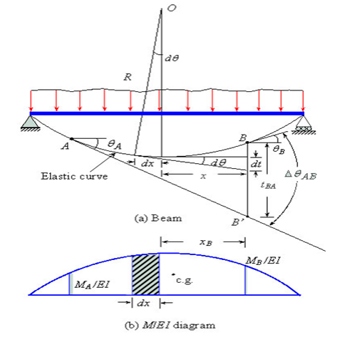
The above figure shows the elastic curve of a loaded simple beam. On the elastic curve tangents are drawn on points A and B as shown in figure.
Total angle between the two tangents is denoted as ϴAB. In order to find out ϴAB,
consider the incremental change in angle over an infinitesimal segment dx located at a distance of x from point B.
The bending moment and radius of curvature for any section of the beam is given by the usual bending equation.
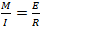--------------1.2
Where,
M = bending moment
I = moment of inertia
R = radius of curvature
E = modulus of elasticity
The elementary length dx and the change in angle dϴ are related as,
dx = dϴ × R --------------1.2
Substituting R value from equation 1.2 in equation 1.1
--------------1.3
The total angle change ϴAB can be obtained by integrating Eq. (1.3) between points A and B which is expressed as
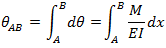
The difference of slope between any two points on a continuous elastic curve of a beam is equal to the area under the M / EI diagram between these points.
The distance dt along the vertical line through point B is nearly equal to
dt =x dϴ
Integration of dt between points A and B yield the vertical distance between the point B and the tangent from point A on the elastic curve. Thus,
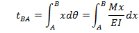
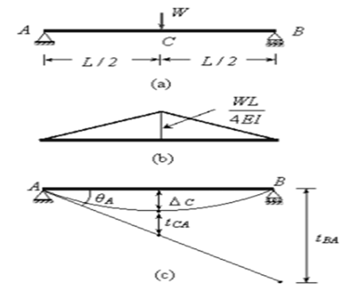
then
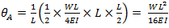 (Clockwise direction)
The slope at B can be obtained by using the first moment area theorem between points A and B i.e.
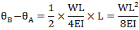
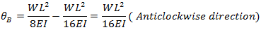
(It is to be noted that the
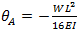
the negative sign is because of the slope being in the clockwise direction.
As per sign convention used the positive slope is in the anti-clockwise direction)
 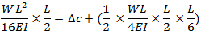
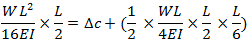


OBJECTIVE : To determine the deflection at the centre of a simply supported beam under concentrated load at mid span. STEPS:
- When you click on deflection of beams file, a new window will appear as shown below. 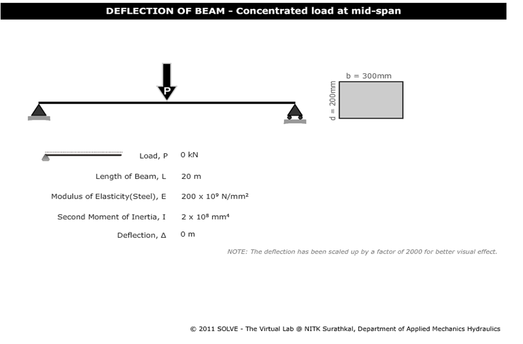
- Click on the TRIANGLE button shown within the circle to adjust the load. 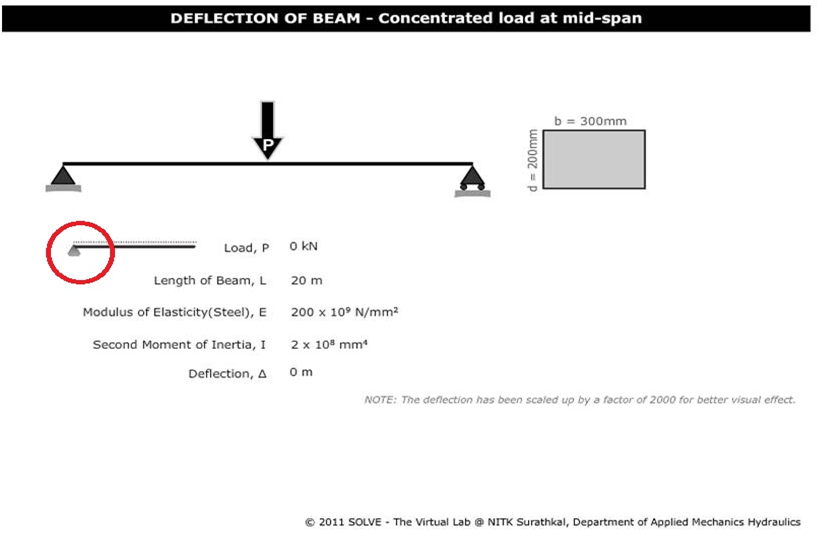
- Now the final deflection of the beam with respect to the given load will be obtained as follows. 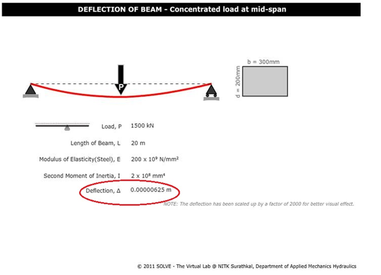


- What is elastic curve?
- What is the deflection at the centre of a simply supported load?
- What is the deflection limit of beams?
- Draw shear force diagram for a simply supported load with point load and UDL?

F.L. Singer. Strength of Materials, Harper and Row Publishers.
Hearns E.J., Mechanics of Materials, Pergaman Press.
Gere and Timoshenko, Mechanics of Materials, CBS Publishers & Distributors.
F.P. Beer and E.R. Johnston, Mechanics for Engineers – Statics & Dynamics, Tata McGraw – Hill.
J.L. Marium and L.G. Kraige, Engineering Mechanics – Vol I & II, John Wiley & Sons.
S.P. Timoshenko and D.H. Young, Engineering Mechanics, McGraw – Hill.
I.H. Shames, Engineering Mechanics – Statics and Dynamics, Prentice Hall of India.
S.S. Bhavikatti and A.V. Hegde, Engineering Mechanics - Problems and Solutions.
G.E. Dieter, Mechanical Metallurgy, SI Metric Edition, McGraw – Hill.